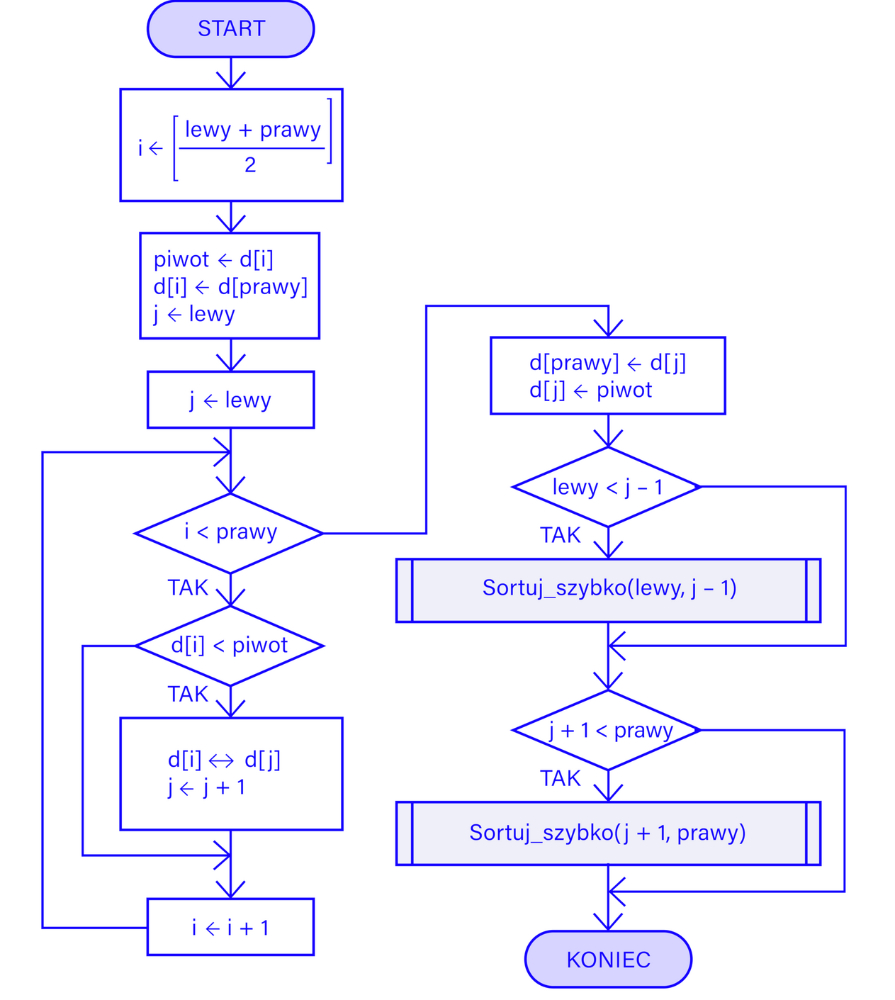

1. Jeśli zbiór zawiera jeden lub zero elementów, jest już posortowany. Zwróć ten zbiór.
2. Podziel zbiór na dwie połowy.
3. Rekurencyjnie zastosuj algorytm sortowania przez scalanie dla każdej z połówek.
4. Scalaj posortowane połówki w celu utworzenia posortowanego zbioru:
Utwórz nową tablicę lub listę, która będzie przechowywać scalone elementy.
Porównuj elementy z obu połówek, zaczynając od ich początków.
Dodawaj mniejszy element do scalanej tablicy/listy.
Jeśli jedna z połówek zostanie już w pełni przeanalizowana, dodaj pozostałe elementy z drugiej połowy do scalanej tablicy/listy.
Powtarzaj te kroki, aż obie połówki zostaną w pełni rozwiązane i wszystkie elementy zostaną umieszczone w scalonej tablicy/liście.
5. Zwróć scalony zbiór.
public class SortowaniePrzezScalanie {
static void scal(int[] zbior, int lewy, int srodek, int prawy) {
int rozmiar1 = srodek - lewy + 1;
int rozmiar2 = prawy - srodek;
int[] lewaCzesc = new int[rozmiar1];
int[] prawaCzesc = new int[rozmiar2];
for (int i = 0; i < rozmiar1; i++)
lewaCzesc[i] = zbior[lewy + i];
for (int j = 0; j < rozmiar2; j++)
prawaCzesc[j] = zbior[srodek + 1 + j];
int i = 0, j = 0, k = lewy;
while (i < rozmiar1 && j < rozmiar2) {
if (lewaCzesc[i] <= prawaCzesc[j]) {
zbior[k] = lewaCzesc[i];
i++;
} else {
zbior[k] = prawaCzesc[j];
j++;
}
k++;
}
while (i < rozmiar1) {
zbior[k] = lewaCzesc[i];
i++;
k++;
}
while (j < rozmiar2) {
zbior[k] = prawaCzesc[j];
j++;
k++;
}
}
static void sortowaniePrzezScalanie(int[] zbior, int lewy, int prawy) {
if (lewy < prawy) { -- (1)
int srodek = (lewy + prawy) / 2; -- (2)
sortowaniePrzezScalanie(zbior, lewy, srodek); -- (3)
sortowaniePrzezScalanie(zbior, srodek + 1, prawy);
scal(zbior, lewy, srodek, prawy); -- (4)
}
}
public static void main(String[] args) {
int[] zbior = {7, 2, 1, 6, 8, 5, 3, 4};
sortowaniePrzezScalanie(zbior, 0, zbior.length - 1);
System.out.print("Posortowany zbior: ");
for (int i = 0; i < zbior.length; i++) {
System.out.print(zbior[i] + " ");
}
}
}
Schemat blokowy
